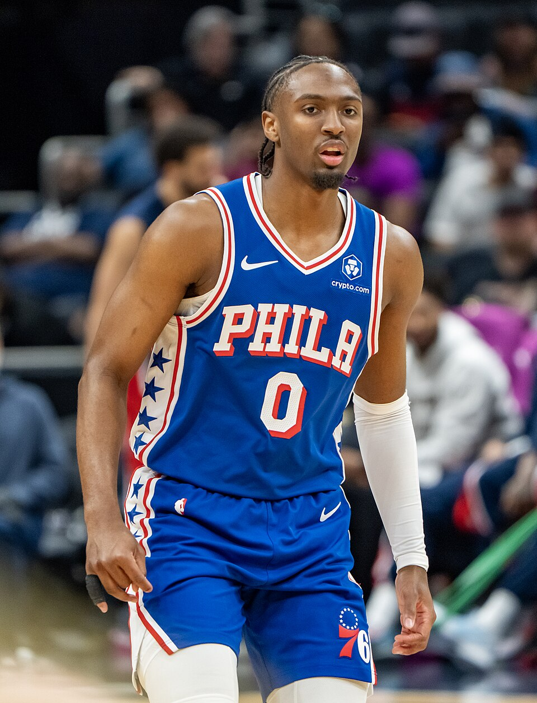

A temporada 2026/2027 da NBA começou com um dos confrontos mais simbólicos do calendário. Na noite desta terça-feira, 20 de outubro, o Philadelphia 76ers derrotou o New York Knicks, no Madison Square Garden, e estragou a celebração dos atuais campeões da liga. Em uma partida que reuniu estrelas, rivalidade na Conferência Leste e uma virada decisiva no segundo tempo, os Sixers mostraram a força de seu elenco reformulado.
Uma abertura histórica no Madison Square Garden
A partida carregava um significado especial para os Knicks. Antes do início do confronto, a franquia realizou a cerimônia de entrega dos anéis de campeão e ergueu a bandeira referente ao título conquistado na temporada passada.
O momento encerrou simbolicamente um jejum que durava desde 1973. Os Knicks haviam derrotado o San Antonio Spurs nas finais anteriores, conquistando o terceiro título da história da franquia e devolvendo Nova York ao topo do basquete norte-americano.
A cerimônia contou com a participação de Walt Frazier, ídolo das conquistas de 1970 e 1973, responsável pela entrega dos anéis aos jogadores. O reencontro entre a equipe campeã e sua torcida transformou a abertura da temporada em uma celebração histórica.
A festa também representava o reconhecimento de uma campanha construída com atuações decisivas de Brunson e seus companheiros. A conquista havia colocado a franquia novamente entre as grandes protagonistas da liga.
Porém, o adversário escolhido para a noite de celebração tinha condições de transformar a festa em um desafio competitivo. O Philadelphia chegava com um elenco reforçado e com a oportunidade de começar a temporada derrotando justamente o campeão.
Como foi o jogo
O primeiro tempo foi favorável aos donos da casa. Os Knicks conseguiram controlar diferentes momentos da partida, exploraram as dificuldades ofensivas dos Sixers e construíram vantagens importantes.
No primeiro quarto, Nova York venceu por 25 a 23. A diferença permaneceu pequena no segundo período, mas os Knicks voltaram a superar o adversário, desta vez por 33 a 31, chegando ao intervalo com 58 a 54 no placar.
A equipe comandada por Mike Brown chegou a abrir dez pontos de vantagem em três oportunidades durante o segundo quarto. O cenário parecia favorável para que a noite terminasse com uma vitória diante da torcida. Mas a reação do Philadelphia começou a ganhar força depois do intervalo.
O terceiro quarto foi o período determinante do confronto. Os Sixers marcaram 29 pontos e permitiram apenas 18 aos Knicks, transformando uma desvantagem de quatro pontos em uma liderança de sete.
A sequência decisiva aconteceu no encerramento do período. Philadelphia marcou 11 pontos consecutivos, sem resposta de Nova York, com participação fundamental de Jaylen Brown, que converteu duas bolas de três pontos, incluindo um arremesso no estouro do cronômetro. Com isso, os visitantes chegaram ao último quarto vencendo por 83 a 76.
A reação dos Knicks no período final manteve o confronto aberto. Karl-Anthony Towns acertou uma bola de três pontos de longa distância, reduzindo a diferença para apenas um ponto quando restavam 4 minutos e 37 segundos.
Na sequência, a defesa do Philadelphia ganhou protagonismo. Os Sixers dificultaram as ações de Brunson, protegeram os espaços próximos à cesta e conseguiram responder ofensivamente.
Embiid acertou uma bola de três pontos em um momento importante. Towns ainda recolocou os Knicks na disputa ao reduzir o placar para 100 a 98, mas VJ Edgecombe apareceu com uma enterrada após assistência de Embiid, ajudando os visitantes a preservar a vantagem.
O resultado final de 106 a 100 confirmou a vitória dos Sixers e encerrou a noite de celebração dos Knicks com derrota.
Veja os melhores momentos da partida abaixo:
O grande destaque da abertura
Embora a atenção estivesse concentrada nas estreias de LeBron James e Jaylen Brown, o principal pontuador da partida foi Tyrese Maxey.
O armador terminou com 28 pontos e teve papel decisivo na vitória. Sua velocidade, capacidade de infiltração e participação defensiva ajudaram o Philadelphia a encontrar soluções durante os momentos de maior dificuldade.
Maxey também apareceu em uma jogada importante nos minutos finais, quando interceptou um passe de OG Anunoby e finalizou a transição com uma enterrada.
O desempenho mostrou uma característica importante da nova formação dos Sixers: mesmo com jogadores de enorme reconhecimento internacional, Maxey continuou sendo uma referência na produção ofensiva da equipe.
A presença de diferentes criadores de jogadas ampliou as possibilidades do Philadelphia. Em vez de depender exclusivamente de um jogador, os Sixers conseguiram distribuir responsabilidades entre suas principais estrelas.
LeBron James inicia a 24ª temporada da carreira
Outro capítulo histórico da abertura da competição foi a estreia de LeBron pelo Philadelphia 76ers.
Depois de deixar o Los Angeles Lakers, o astro iniciou sua 24ª temporada na NBA, ampliando o próprio recorde de longevidade na competição. Aos 41 anos, LeBron passou a defender a quarta franquia de sua carreira, depois de Cleveland Cavaliers, Miami Heat e Lakers.
Sua primeira atuação oficial pelos Sixers teve 14 pontos, nove rebotes e sete assistências.
Mais do que os números individuais, LeBron participou da organização ofensiva e de ações defensivas importantes na reta final, incluindo uma intervenção em uma tentativa de bandeja de Mikal Bridges.
A estreia também apresentou uma utilização tática interessante. Em determinados momentos, o técnico Nick Nurse colocou James na função de pivô, permitindo formações menores e maior mobilidade ofensiva.
Em uma dessas posses, LeBron atraiu a marcação dentro do garrafão e encontrou Jaylen Brown livre para uma enterrada.
A combinação entre experiência, leitura de jogo e versatilidade mostrou como o astro poderia contribuir para um elenco que também contava com Embiid, Maxey e Brown.
Jaylen Brown estreia com protagonismo
A chegada do ala foi outra grande novidade apresentada pelo Philadelphia.
Contratado em uma troca com o Boston Celtics durante a intertemporada, ele iniciou sua passagem pelos Sixers com 19 pontos, oito rebotes e seis assistências.
Brown foi especialmente importante na reação do terceiro quarto. Suas bolas de três pontos ajudaram a transformar o ritmo da partida e deram ao Philadelphia a confiança necessária para assumir a liderança.
Sua atuação defensiva também ganhou relevância nos minutos finais. Diante das tentativas de Jalen Brunson de criar vantagens em jogadas de bloqueio, Brown participou de trocas de marcação que limitaram as opções ofensivas dos Knicks.
A estreia deixou uma indicação importante sobre a construção do novo elenco: Brown não precisaria atuar apenas como pontuador, podendo contribuir com defesa, rebotes e criação de oportunidades para os companheiros.
Os números dos principais jogadores
Philadelphia 76ers:
- Tyrese Maxey — 28 pontos
- Jaylen Brown — 19 pontos, 8 rebotes e 6 assistências
- LeBron James — 14 pontos, 9 rebotes e 7 assistências
- Joel Embiid — 13 pontos e 11 rebotes
- Anfernee Simons — 13 pontos
- Kentavious Caldwell-Pope — 10 pontos
New York Knicks:
- Jalen Brunson — 21 pontos
- Karl-Anthony Towns — 19 pontos e 12 rebotes
- Josh Hart — 14 pontos
- Andre Drummond — 12 pontos e 14 rebotes
- OG Anunoby — 10 pontos
Joel Embiid também foi importante na proteção do garrafão, terminando com três bloqueios e dois roubos de bola. Apesar de converter apenas quatro de seus 15 arremessos, o pivô teve impacto defensivo na vitória.
Pelos Knicks, Andre Drummond conseguiu um duplo-duplo em sua estreia na temporada contra sua antiga equipe, enquanto Brunson encontrou dificuldades de aproveitamento, acertando seis de 19 tentativas de arremesso.
Abertura simbólica da NBA 2026/27
A vitória dos 76ers teve um significado que ultrapassou o resultado da primeira rodada da temporada regular.
O confronto reuniu o campeão da NBA, um dos elencos mais reforçados da intertemporada, a estreia de LeBron James em uma nova franquia e a rivalidade entre duas equipes da Divisão do Atlântico.
Também representou um reencontro carregado de contexto. Nos playoffs de 2026, os Knicks haviam eliminado os Sixers nas semifinais da Conferência Leste, vencendo a série por 4 a 0. Meses depois, Philadelphia retornou ao Madison Square Garden com Brown e LeBron no elenco e conseguiu superar o rival.
Para os Knicks, a derrota não diminuiu o significado do título celebrado antes da partida. O resultado, entretanto, mostrou que a defesa do campeonato exigiria novas respostas e capacidade de adaptação diante de adversários fortalecidos.
Para os 76ers, a vitória ofereceu uma primeira demonstração competitiva da combinação entre LeBron James, Jaylen Brown, Tyrese Maxey e Joel Embiid, ainda que uma única partida não fosse suficiente para estabelecer uma hierarquia definitiva na Conferência Leste.
A rodada inaugural também contou com Detroit Pistons 121 a 113 Boston Celtics e Oklahoma City Thunder 116 a 104 San Antonio Spurs, completando os três confrontos do primeiro dia da temporada.
Próximos jogos de Knicks e 76ers
Philadelphia 76ers:
- Adversário: Cleveland Cavaliers
- Data: quinta-feira, 22 de outubro de 2026
- Horário: 20h (Brasília)
New York Knicks:
- Adversário: Boston Celtics
- Data: sexta-feira, 23 de outubro de 2026
- Horário: 20h (Brasília)
O legado da noite de abertura
A abertura da NBA 2026/2027 ficou marcada por duas histórias que se encontraram no mesmo palco.
De um lado, os Knicks celebraram o fim de uma espera de 53 anos e receberam o reconhecimento por uma conquista histórica. Do outro, os Sixers apresentaram um projeto renovado, reunindo jogadores consagrados e uma das principais referências ofensivas da nova geração.
Tyrese Maxey terminou como protagonista da pontuação, Jaylen Brown marcou sua estreia com uma atuação completa, LeBron James acrescentou outro capítulo à sua trajetória histórica e Joel Embiid foi fundamental na defesa.
Para o Madison Square Garden, foi uma noite de celebração e frustração. Para o Philadelphia 76ers, foi o início vitorioso de uma nova era. E, para a NBA, um confronto de abertura que reuniu história, estrelas e uma rivalidade capaz de ganhar ainda mais importância durante a temporada.